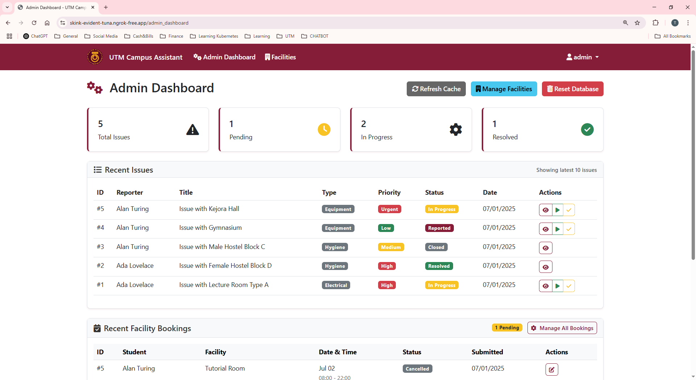
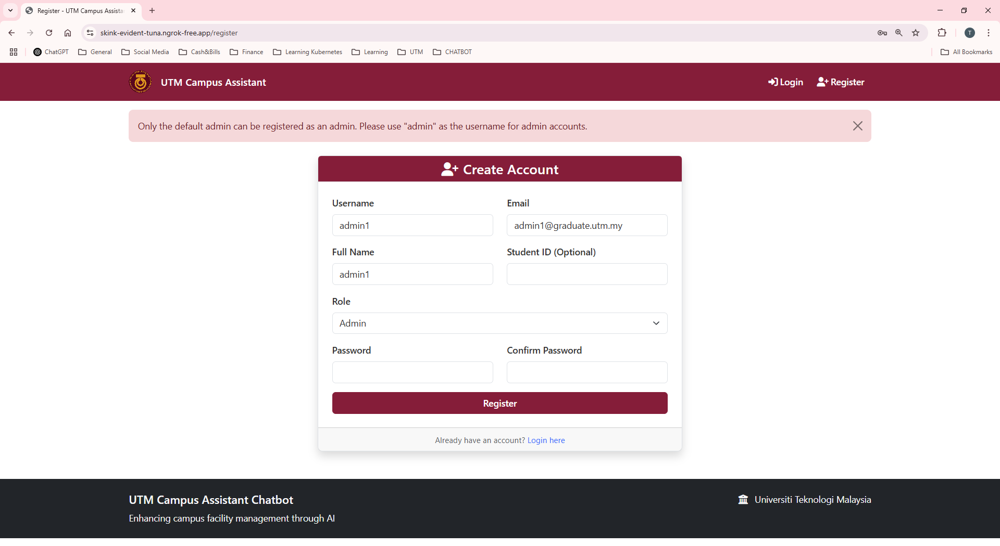
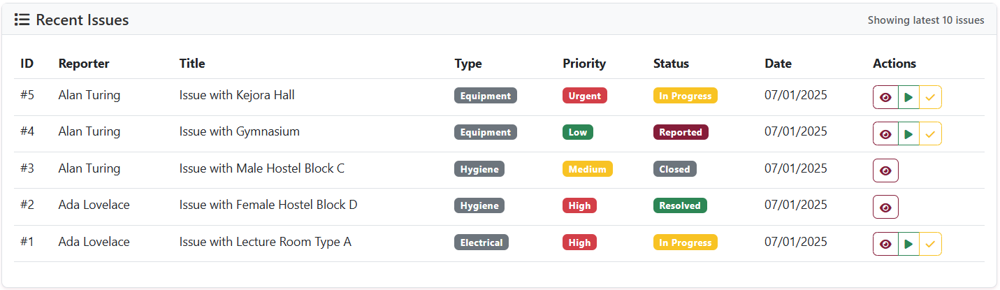
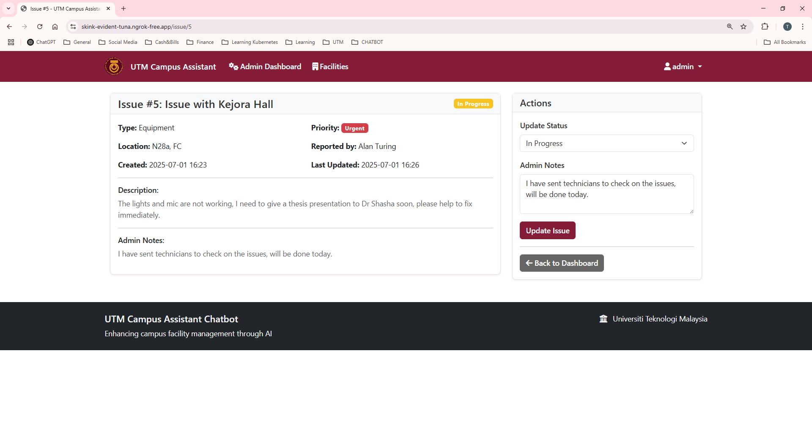
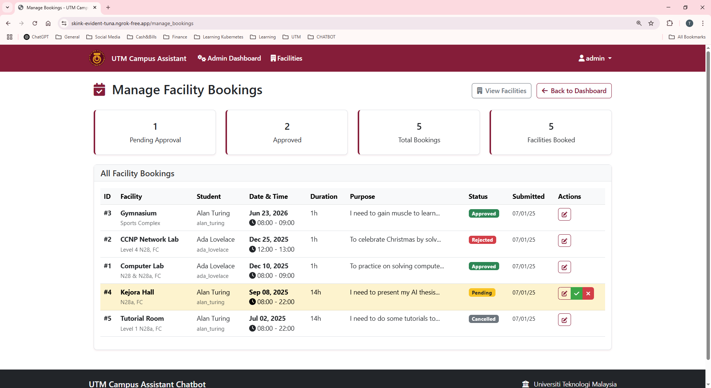
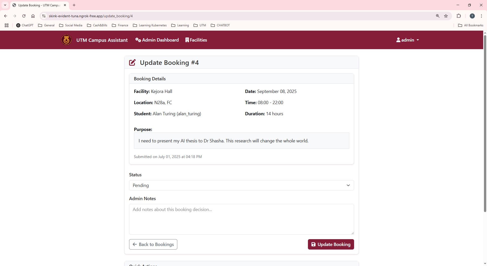
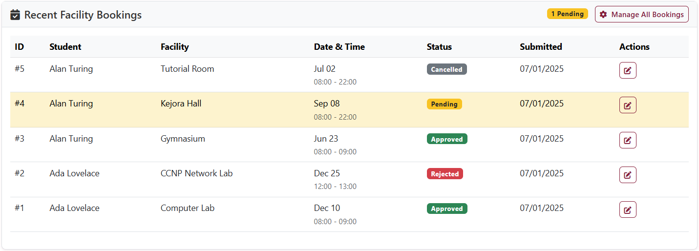
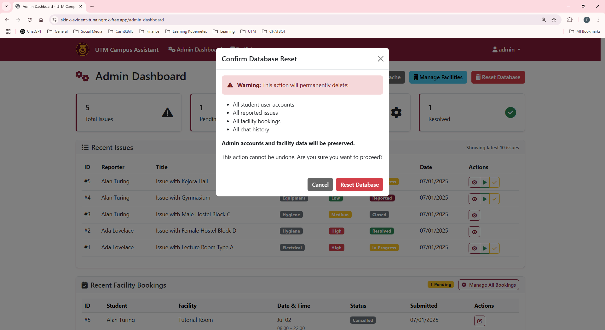

Administrator Guide
Welcome to the UTM Campus Assistant Administrator Guide. This section provides comprehensive instructions for managing all aspects of the campus facility system.
Admin Dashboard Overview
The Admin Dashboard provides centralized control over the entire system. Access it by logging in with an admin account and navigating to the dashboard.
{kind=link}
Dashboard Features:
System Statistics: Overview of active issues, bookings, and user activity
Quick Actions: Direct access to common administrative tasks
Recent Activity: Latest system events and user interactions
Status Indicators: Health monitoring for AI services and database
User Management
Creating Admin Accounts
Registration Process:
Navigate to registration page
Select “Admin” role from dropdown
Complete all required fields
System validates admin privileges
User Verification:
Review registration requests
Verify institutional email addresses
Approve or deny admin privileges
Monitor user activity logs
{kind=link}
Managing Student Accounts
Account Monitoring:
View all registered students
Check login activity and timestamps
Monitor issue reporting patterns
Review facility usage statistics
Account Actions:
Reset student passwords (if implemented)
Deactivate problematic accounts
Update student information
Merge duplicate accounts
Issue Management System
Issue Tracking Dashboard
{kind=link}
The issues dashboard provides complete oversight of all facility problems reported by students.
Key Features:
Status Filter: Filter by REPORTED, IN_PROGRESS, RESOLVED, CLOSED
Priority Sorting: HIGH, MEDIUM, LOW, URGENT classifications
Category Filter: Electrical, Hygiene, Structural, Equipment, Security, Other
Assignment Tracking: See which admin is handling each issue
Issue Response Workflow
{kind=link}
Issue Review:
Click on any issue to view full details
Review AI-generated classification
Check facility location and description
Assess priority level accuracy
Status Updates:
REPORTED → IN_PROGRESS → RESOLVED → CLOSED
IN_PROGRESS: Assign to technician or yourself
RESOLVED: Mark when repair/fix is complete
CLOSED: Final closure after student feedback
Admin Notes:
Add detailed progress notes
Document repair actions taken
Include cost estimates or vendor information
Create maintenance schedules
Issue Classification System
The AI service automatically classifies issues, but admins can override:
Category |
Examples |
Typical Priority |
Response Time |
|---|---|---|---|
Electrical |
Power outages, faulty outlets |
HIGH/URGENT |
2-4 hours |
Hygiene |
Cleaning, sanitation issues |
MEDIUM |
24 hours |
Structural |
Building damage, leaks |
HIGH |
4-8 hours |
Equipment |
Broken lab equipment |
MEDIUM/HIGH |
8-24 hours |
Security |
Access control, locks |
HIGH/URGENT |
1-2 hours |
Other |
General maintenance |
LOW/MEDIUM |
48 hours |
Facility Management
Facility Information System
Adding New Facilities:
Navigate to “Manage Facilities” section
Click “Add New Facility”
Complete facility details:
- Name: Building/Room identifier - Category: Laboratory, Academic, Sports, etc. - Location: Detailed address/directions - Capacity: Maximum occupancy - Operating Hours: Access times - Contact Info: Responsible person/department - Bookable Status: Yes/No
Facility Categories:
Laboratory: Research and teaching labs
Academic: Classrooms, lecture halls
Sports: Gymnasiums, fields, courts
Administrative: Offices, meeting rooms
Accommodation: Dormitories, guest houses
Dining: Cafeterias, food courts
Event: Auditoriums, conference centers
Facility Updates and Maintenance
Regular Updates:
Update operating hours seasonally
Modify capacity based on renovations
Add new equipment information
Update contact details for staff changes
Maintenance Scheduling:
Plan preventive maintenance windows
Coordinate with facility booking system
Notify users of temporary closures
Update facility status in real-time
Booking Management System
Booking Approval Workflow
{kind=link}
Booking Review Process:
Pending Requests: View all student booking requests
Request Evaluation:
Check facility availability
Verify student credentials
Assess purpose appropriateness
Review time slot conflicts
Approval Actions:
APPROVED: Confirm booking with notes
REJECTED: Decline with reason
PENDING: Keep under review
CANCELLED: Handle cancellations
{kind=link}
Booking Conflict Resolution
Conflict Types:
Time Overlap: Multiple requests for same time slot
Capacity Exceeded: Too many people for facility
Maintenance Conflicts: Scheduled repairs during booking
Policy Violations: Inappropriate use requests
Resolution Strategies:
Contact students to negotiate alternative times
Suggest similar alternative facilities
Implement waiting list for popular facilities
Create booking priority system for academic vs. recreational use
Booking Analytics
{kind=link}
Usage Metrics:
Most popular facilities and time slots
Average booking duration
Approval/rejection rates
Student booking patterns
Seasonal usage trends
Reports Available:
Daily/Weekly/Monthly booking summaries
Facility utilization rates
Student activity reports
Revenue tracking (if applicable)
Chatbot Administration
AI Service Monitoring
Service Health Checks:
Monitor DeepSeek LLM API connectivity
Check response times and timeout rates
Review AI classification accuracy
Monitor fallback system usage
Performance Metrics:
Response Time Targets:
- Simple queries: < 3 seconds
- Complex facility searches: < 5 seconds
- Issue classification: < 2 seconds
- General conversation: < 4 seconds
Chat Session Management
Session Monitoring:
View active chat sessions
Review conversation histories
Identify common query patterns
Monitor user satisfaction
Content Moderation:
Review inappropriate queries
Monitor AI response quality
Handle escalated conversations
Update response templates
AI Training and Improvement
Facility Data Updates:
Cache Management:
# Refresh facility cache when updates are made # System automatically reloads facility information # Updates reflect immediately in chatbot responses
Response Quality:
Review chat logs for improvement opportunities
Update facility descriptions for better AI understanding
Refine entity extraction patterns
Improve intent classification accuracy
System Maintenance
Database Management
{kind=link}
Routine Operations:
Database Reset: Clear all data and reload samples
Cache Refresh: Update facility information in AI service
User Cleanup: Remove inactive accounts
Log Rotation: Archive old system logs
Backup Procedures:
Daily Automated Backups:
# Automatic backup at 2 AM daily pg_dump utm_campus_assistant > daily_backup.sql
Manual Backup Before Major Changes:
# Before system updates or data migration pg_dump utm_campus_assistant > pre_update_backup.sql
System Health Monitoring
Key Performance Indicators:
Metric |
Description |
Alert Threshold |
|---|---|---|
Database Connections |
Active PostgreSQL connections |
> 80% of max |
AI Response Rate |
DeepSeek API availability |
< 95% success |
Memory Usage |
Application memory consumption |
> 90% available |
Disk Space |
Storage utilization |
> 85% full |
Error Rate |
Application error frequency |
> 5% of requests |
Troubleshooting Common Issues
Database Connection Issues:
# Check database status
pg_isready -h localhost -p 5432
# Restart database service
sudo systemctl restart postgresql
AI Service Problems:
# Verify DeepSeek service
curl http://localhost:11434/v1/models
# Restart Ollama service
systemctl restart ollama
Application Performance:
# Monitor resource usage
htop
# Check application logs
tail -f /var/log/utm_assistant.log
Security Administration
Access Control Management
Role-Based Permissions:
Feature |
Student Access |
Admin Access |
|---|---|---|
View Facilities |
✓ All facilities |
✓ All facilities + management |
Report Issues |
✓ Own reports only |
✓ All reports + management |
Book Facilities |
✓ Request only |
✓ Request + approve/deny |
Chatbot |
✓ General queries |
✓ All queries + monitoring |
User Management |
✗ No access |
✓ Full control |
System Settings |
✗ No access |
✓ Configuration access |
Security Best Practices
Password Policy:
Minimum 6 characters (consider increasing to 8+)
Bcrypt hashing with salt
Session timeout after inactivity
Account lockout after failed attempts
Data Protection:
CSRF protection on all forms
SQL injection prevention via SQLAlchemy ORM
XSS protection through template escaping
Secure session management
Audit Logging:
User login/logout events
Administrative actions
Data modifications
Security-related events
Regular Maintenance Tasks
Daily Tasks
Review new issue reports
Process pending facility bookings
Monitor system performance metrics
Check AI service health
Weekly Tasks
Analyze facility usage patterns
Review user feedback and ratings
Update facility information as needed
Generate utilization reports
Monthly Tasks
Database maintenance and optimization
Security audit and review
System backup verification
Performance analysis and optimization
Seasonal Tasks
Update facility operating hours
Review and update emergency procedures
Plan for academic calendar changes
Conduct comprehensive system testing